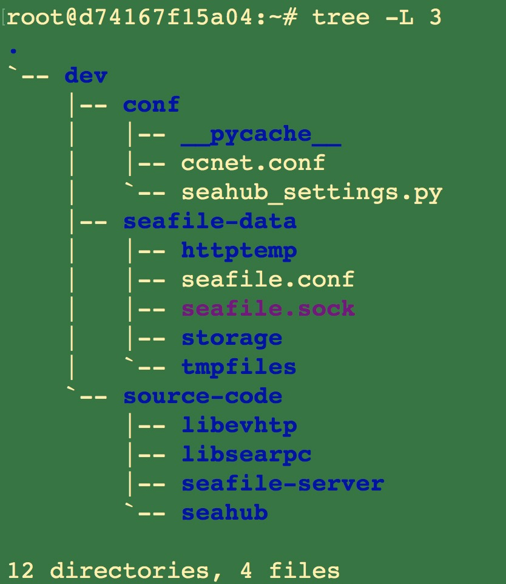

Server
This is the document for deploying Seafile open source development environment in Ubuntu 1804 docker container.
Run a container¶
docker run -it -p 8000:8000 -p 8082:8082 -p 3000:3000 --name seafile-ce-env ubuntu:18.04 bash
Note, the following commands are all executed in the seafile-ce-env docker container.
Update Source and Install Dependencies.¶
apt-get update && apt-get upgrade -y
apt-get install -y ssh libevent-dev libcurl4-openssl-dev libglib2.0-dev uuid-dev intltool libsqlite3-dev libmysqlclient-dev libarchive-dev libtool libjansson-dev valac libfuse-dev python-dateutil cmake re2c flex sqlite3 python-pip python-simplejson git libssl-dev libldap2-dev libonig-dev vim vim-scripts wget cmake gcc autoconf automake mysql-client librados-dev libxml2-dev curl sudo telnet netcat unzip netbase ca-certificates apt-transport-https build-essential libxslt1-dev libffi-dev libpcre3-dev libz-dev xz-utils nginx pkg-config poppler-utils libmemcached-dev sudo
curl -sL https://deb.nodesource.com/setup_10.x | sudo -E bash -
apt-get install -y nodejs
apt-get install -y python3-pip python3.6 python3.6-dev
python3.6 -m pip install --upgrade pip
rm /usr/bin/python
rm /usr/bin/python3
ln -s /usr/bin/python3.6 /usr/bin/python
ln -s /usr/bin/python3.6 /usr/bin/python3
rm /usr/bin/pip
rm /usr/bin/pip3
ln -s /usr/local/bin/pip3.6 /usr/bin/pip
ln -s /usr/local/bin/pip3.6 /usr/bin/pip3
pip install python-cas djangosaml2 cffi sqlalchemy pymysql pillow pycryptodome configparser pylibmc django-pylibmc elasticsearch==5.5.0 elasticsearch-dsl==5.4.0 Django==2.2.14 future captcha django-statici18n django-post_office==3.3.0 django-webpack_loader gunicorn mysqlclient django-picklefield==2.1.1 openpyxl qrcode django-formtools django-simple-captcha djangorestframework==3.11.1 python-dateutil requests pillow pyjwt pycryptodome requests_oauthlib mock nose exam splinter pytest pytest-django
Install MariaDB and Create Databases¶
apt-get install -y mariadb-server
service mysql start
mysqladmin -u root password 123456
sql for create databases
create database ccnet charset utf8;
create database seafile charset utf8;
create database seahub charset utf8;
Download Source Code¶
cd ~/
mkdir -p ~/dev/source-code
cd ~/dev/source-code
git clone https://github.com/haiwen/libevhtp.git
git clone https://github.com/haiwen/libsearpc.git
git clone https://github.com/haiwen/seafile-server.git
git clone https://github.com/haiwen/seahub.git
cd libsearpc/
git fetch origin 8.0:8.0
git checkout 8.0
cd ../seafile-server
git checkout tags/v8.0.0-server -b tag-v8.0.0-server
cd ../seahub
git checkout tags/v8.0.0-server -b tag-v8.0.0-server
Compile and Install seaf-server¶
cd ../libevhtp
cmake -DEVHTP_DISABLE_SSL=ON -DEVHTP_BUILD_SHARED=OFF .
make
make install
ldconfig
cd ../libsearpc
./autogen.sh
./configure
make
make install
ldconfig
cd ../seafile-server
./autogen.sh
./configure --disable-fuse
make
make install
ldconfig
Create Conf Files¶
mkdir ~/dev/conf
cd ~/dev/conf
cat > ccnet.conf <<EOF
[Database]
ENGINE = mysql
HOST = localhost
PORT = 3306
USER = root
PASSWD = 123456
DB = ccnet
CONNECTION_CHARSET = utf8
CREATE_TABLES = true
[General]
SERVICE_URL = http://127.0.0.1:8000
EOF
cat > seahub_settings.py <<EOF
DATABASES = {
'default': {
'ENGINE': 'django.db.backends.mysql',
'NAME': 'seahub',
'USER': 'root',
'PASSWORD': '123456',
'HOST': 'localhost',
'PORT': '3306',
}
}
FILE_SERVER_ROOT = 'http://127.0.0.1:8082'
EOF
mkdir ~/dev/seafile-data
cd ~/dev/seafile-data
cat > seafile.conf <<EOF
[database]
type = mysql
host = localhost
port = 3306
user = root
password = 123456
db_name = seafile
connection_charset = utf8
create_tables = true
EOF
Start seaf-server¶
seaf-server -c /root/dev/conf -d /root/dev/seafile-data -D all -f -l - &
Start seahub¶
Prepare environment variables¶
cd ~/dev/source-code/seahub/
export PYTHONPATH=/usr/local/lib/python3.6/site-packages/:/root/dev/source-code/seahub/thirdpart:$PYTHONPATH
export CCNET_CONF_DIR=/root/dev/conf
export SEAFILE_CONF_DIR=/root/dev/seafile-data
export SEAFILE_CENTRAL_CONF_DIR=/root/dev/conf
Create seahub database tables¶
python manage.py migrate
Create user¶
python manage.py createsuperuser
Start seahub¶
python manage.py runserver 0.0.0.0:8000
Then, you can visit http://127.0.0.1:8000/ to use Seafile.
The Final Directory Structure¶

More¶
Deploy Frontend Development Environment¶
For deploying frontend development enviroment, you need:
1, checkout seahub to master branch
cd /root/dev/source-code/seahub
git fetch origin master:master
git checkout master
2, add the following configration to /root/dev/conf/seahub_settings.py
import os
PROJECT_ROOT = '/root/dev/source-code/seahub'
WEBPACK_LOADER = {
'DEFAULT': {
'BUNDLE_DIR_NAME': 'frontend/',
'STATS_FILE': os.path.join(PROJECT_ROOT,
'frontend/webpack-stats.dev.json'),
}
}
DEBUG = True
3, install js modules
cd /root/dev/source-code/seahub/frontend
npm install
4, npm run dev
cd /root/dev/source-code/seahub/frontend
npm run dev
5, start seaf-server and seahub